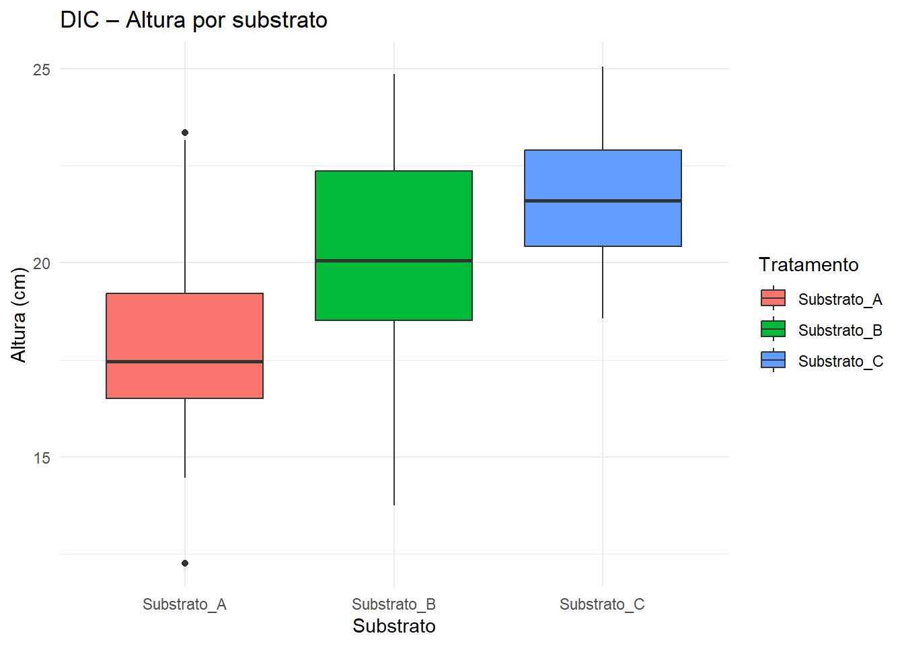
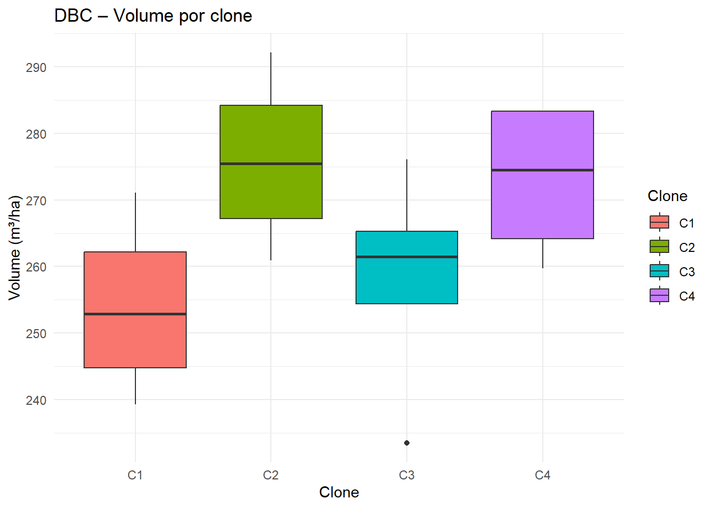
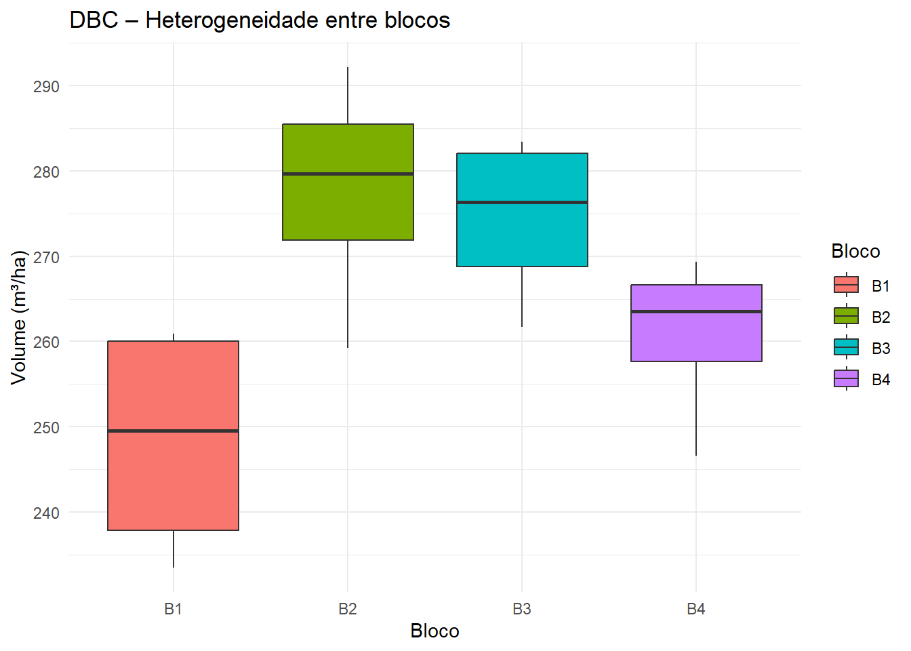

6📖 Capítulo 4 – Delineamentos Experimentais I (DIC e DBC)
Módulo 2 – Semana 5
6.1 🌱 Narrativa aplicada
Você precisa recomendar o melhor manejo em dois cenários distintos:
Viveiro homogêneo: escolher o substrato que maximiza o crescimento inicial de mudas nativas.
Campo heterogêneo: selecionar o clone de Eucalyptus mais produtivo em uma área com gradiente de solo.
Para responder com confiança, vamos planejar experimentos usando DIC (ambiente homogêneo) e DBC (ambiente heterogêneo).
Dica
💡 Ideia central: Controlamos a aleatorização e a repetição em qualquer delineamento. Quando há heterogeneidade conhecida (ex.: faixas de solo), usamos blocos (DBC) para reduzir o erro.
6.2 🎯 Objetivos de aprendizagem
Diferenciar DIC e DBC e quando usar cada um.
Associar repetição, aleatorização e controle local aos experimentos.
Especificar o modelo linear de cada delineamento.
Analisar, no R, um DIC (viveiro) e um DBC (campo).
6.3 📊 Conceitos‑chave (com exemplos)
Unidade experimental
DIC: muda em tubete (viveiro).
DBC: parcela por bloco (ex.: 10–20 árvores) em campo.
Repetição
Aumenta precisão das estimativas.
Ex.: 10 mudas por substrato (DIC).
Aleatorização
Garante independência entre observações.
Ex.: sortear a posição das mudas nas bandejas (DIC) e a posição dos clones em cada bloco (DBC).
Controle local (blocos)
Diminui a variação não controlada.
Ex.: dividir a área em 4 blocos segundo o gradiente de solo (DBC).
6.4 🧮 Modelos lineares
6.4.1 DIC (Delineamento Inteiramente Casualizado)
\[ Y_{ij} = \mu + \tau_i + \varepsilon_{ij} \]
\(Y_{ij}\): resposta da j‑ésima repetição do i‑ésimo tratamento.
\(\mu\): média geral; (_i): efeito do tratamento (substrato);
\(\beta_j\): efeito do bloco (ex.: faixa de solo).
Demais termos como acima.
Vantagem: retira da “conta do erro” a variação sistemática entre blocos.
6.5 💻 Experimento 1 – Viveiro (DIC – substratos)
Contexto: bandejas de isopor com 3 substratos (A, B, C). Unidade experimental: muda em tubete. Repetições: 10 por substrato. Variáveis: Altura_cm, Biomassa_g.
📦 Dados desta análise
- crescimento_mudas.csv (mesmo do Cap. 2)
- Colab: /content/crescimento_mudas.csv
- Quarto: dados/crescimento_mudas.csv
Df Sum Sq Mean Sq F value Pr(>F)
Tratamento 2 226.4 113.21 21.63 2.38e-08 ***
Residuals 87 455.5 5.24
---
Signif. codes: 0 '***' 0.001 '**' 0.01 '*' 0.05 '.' 0.1 ' ' 1
Código
# Visualizaçãoggplot(mudas, aes(Tratamento, Altura_cm, fill = Tratamento)) +geom_boxplot() +theme_minimal() +labs(title ="DIC – Altura por substrato", x ="Substrato", y ="Altura (cm)")

Nota
📌 Leia a tabela de ANOVA (DIC): se p < 0,05, há diferença global entre substratos. Para saber quais diferem, use Tukey (você já conhece do Cap. 3B).
6.6 💻 Experimento 2 – Campo (DBC – clones de Eucalyptus)
Problema real: escolher o clone mais produtivo para uma área com gradiente de solo (heterogênea). Delineamento: 4 clones (C1–C4) × 4 blocos (B1–B4), 1 parcela/clone/bloco. Variável resposta: Volume_m3ha (m³/ha). Unidade experimental: parcela (ex.: 12–20 árvores).
📦 Dados desta análise
- clones_eucalipto.csv(novo)
- Colab: /content/clones_eucalipto.csv
- Quarto: dados/clones_eucalipto.csv
Remove do erro a variação sistemática entre faixas de solo.
Ganha poder para detectar diferenças entre clones.
6.6.3 Visualização por blocos e por clone
Código
ggplot(clones, aes(Clone, Volume_m3ha, fill = Clone)) +geom_boxplot() +theme_minimal() +labs(title ="DBC – Volume por clone", x ="Clone", y ="Volume (m³/ha)")

Código
ggplot(clones, aes(Bloco, Volume_m3ha, fill = Bloco)) +geom_boxplot() +theme_minimal() +labs(title ="DBC – Heterogeneidade entre blocos", x ="Bloco", y ="Volume (m³/ha)")

Importante
⚠️ Comparação didática
Ajuste sem blocos e compare: